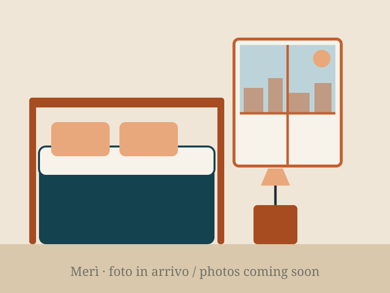

Camera Matrimoniale
Matrimoniale · max 2 ospiti · bagno privato
Nel cuore di Castello, luminosa e accogliente. Letto matrimoniale e bagno privato con doccia: tutto il necessario per un soggiorno comodo.
- Bagno privato con doccia
- Aria condizionata e riscaldamento
- Wi-Fi veloce gratuito
- Biancheria e set di cortesia